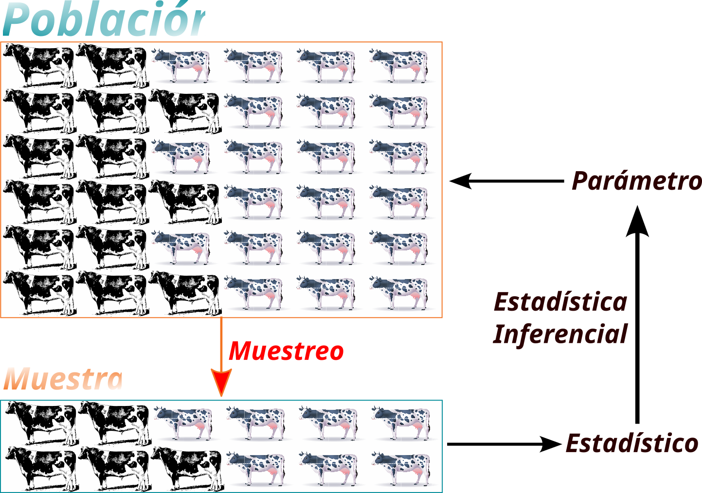
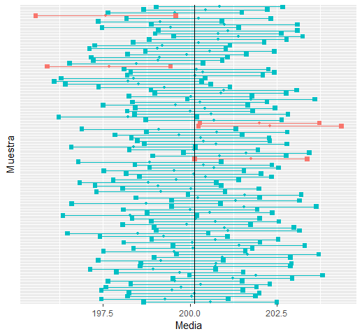
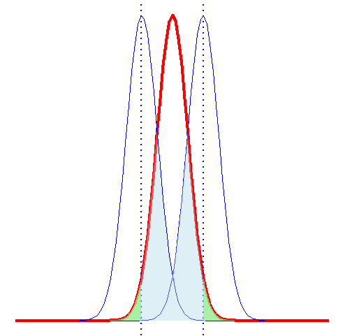
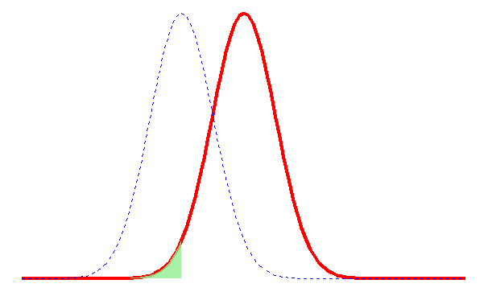
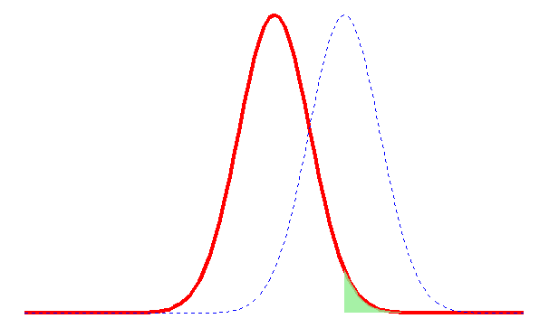
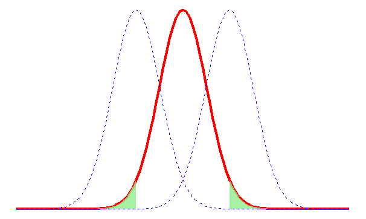
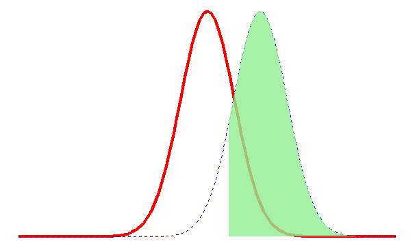

viewof conf_ic = Inputs.radio([90, 95, 99], {
label: "Nivel de confianza (%)",
value: 95
})
viewof n_ic = Inputs.range([5, 100], {
label: "Tamaño de muestra (n)",
step: 5,
value: 30
})
viewof m_ic = Inputs.range([20, 200], {
label: "Número de muestras (M)",
step: 10,
value: 50
})
viewof resimular_ic = Inputs.button("🔀 Nueva simulación")6 Estadística Inferencial
6.1 Objetivos del capítulo
Al finalizar este capítulo, el lector será capaz de:
- Comprender la diferencia entre estimación puntual e intervalos de confianza
- Construir e interpretar correctamente intervalos de confianza para la media, la proporción y la diferencia de medias
- Formular hipótesis nula y alternativa en contextos de investigación agrícola
- Identificar los errores Tipo I y Tipo II en pruebas de hipótesis y sus consecuencias
- Calcular e interpretar el valor \(p\), el tamaño del efecto y la potencia de una prueba
- Ejecutar pruebas \(t\) y pruebas \(z\) en R con datos reales
En la Sección 2.5 se habló de los tipos de estadística; la estadística inferencial consiste en los métodos por medio de los cuales se puede hacer inferencias o generalizaciones sobre una población. En la Figura 6.1 se ilustra la relación entre la estadística descriptiva y la inferencial. La inferencia estadística se puede dividir en dos grandes áreas: estimación y pruebas de hipótesis.

Imaginemos que se desea estimar el promedio de producción diaria de una raza lechera en el trópico húmedo. Como no se tiene acceso a todas las vacas de la raza de interés, resulta difícil estimar el valor exacto del promedio. Por esta razón, proporcionar un intervalo en el que posiblemente se encuentre el valor que deseamos estimar tiene menor riesgo que dar un único número.
Supongamos que usted como investigador quiere probar que el promedio de la producción diaria de cierta raza es mayor en una región con temperaturas menores a las del trópico húmedo. Un gráfico puede orientar la respuesta, pero no es la forma adecuada para contestar una pregunta de este tipo.
Los dos problemas citados serán abordados en este capítulo. El primero en la Sección 6.2 y el segundo en la Sección 6.3.
6.2 Intervalos de Confianza
Un estimador puntual de un parámetro \(\theta\) es un número \(\hat{\theta}\) de un estadístico \(\hat{\Theta}\) que puede ser considerado un valor que se aproxima a \(\theta\). Por ejemplo, \(\bar{x}\) calculado de una muestra de tamaño \(n\) es un estimador puntual del parámetro poblacional \(\mu\). Debido a que un estimador puntual es un simple número, no da información por sí solo sobre la precisión y la confiabilidad de la estimación.
En cualquier estimación de un parámetro habrá un error asociado. Lo que se espera de un estimador es que sea insesgado (que en promedio no se aleje del parámetro) y eficiente (que tenga poca variabilidad entre muestras).
La forma general de un intervalo de confianza es:
\[ \text{Estimador puntual} \pm \text{Margen de Error} \tag{6.1}\]
El margen de error cuantifica cuán preciso es nuestro cálculo, basado en la variabilidad del estimador y el nivel de confianza elegido.
6.2.1 Interpretación de un intervalo de confianza
ImportanteInterpretación correcta de un IC
Un intervalo de confianza del \(C\%\) no significa que existe un \(C\%\) de probabilidad de que \(\mu\) esté en ese intervalo (el parámetro es fijo, no aleatorio). La interpretación correcta es: si construimos muchos intervalos con este procedimiento, el \(C\%\) de ellos contendrá el valor real del parámetro.
Por ejemplo, en la Figura 6.2 se muestran 100 intervalos construidos con el \(95\%\) de confianza para el promedio poblacional. Los intervalos en celeste contienen el valor real del parámetro; los intervalos en rojo no lo contienen. Se puede verificar que exactamente 5 intervalos (el 5%) no contienen el valor real, lo que implica que el 95% sí lo contiene.

6.2.2 Intervalo de Confianza para la media \(\mu\)
Para construir un IC para \(\mu\) existen dos casos: cuando se conoce \(\sigma\) y cuando no se conoce \(\sigma\).
6.2.2.1 Intervalo de confianza para \(\mu\) cuando se conoce \(\sigma\)
Si \(\bar{x}\) es la media de una muestra aleatoria de tamaño \(n\) de una población con desviación conocida \(\sigma\), un intervalo con \(100(1-\alpha)\%\) de confianza para \(\mu\) está dado por:
\[ \left(\bar{x} - Z_{\frac{\alpha}{2}}\dfrac{\sigma}{\sqrt{n}},\; \bar{x} + Z_{\frac{\alpha}{2}}\dfrac{\sigma}{\sqrt{n}}\right) \tag{6.2}\]
Donde \(Z_{\alpha/2}\) es el valor crítico: el cuantil de la distribución Normal estándar que deja un área de \(\alpha/2\) en la cola superior.
Importante
Este caso es hipotético. Para usar la Ecuación 6.2 es necesario conocer \(\sigma\), pero conocer \(\sigma\) implica conocer todos los valores de la población, lo que eliminaría la necesidad de estimarla.
6.2.2.2 Intervalo de confianza para \(\mu\) cuando no se conoce \(\sigma\)
En la práctica, la situación habitual es que \(\sigma\) es desconocida. En ese caso se estima con la desviación muestral \(s\) y se usa la distribución \(t\) de Student:
\[ \left(\bar{x} - t_{\frac{\alpha}{2}}\dfrac{s}{\sqrt{n}},\; \bar{x} + t_{\frac{\alpha}{2}}\dfrac{s}{\sqrt{n}}\right) \tag{6.3}\]
donde \(t_{\alpha/2}\) es el valor crítico de la distribución \(t\) con \(n-1\) grados de libertad.
6.2.2.3 Cálculo en R
# Peso de 25 frutos de aguacate (g) - datos simulados con semilla fija
set.seed(2024)
pesos <- rnorm(25, mean = 220, sd = 35)
# IC al 95% con t.test (caso práctico: σ desconocida)
resultado <- t.test(pesos, conf.level = 0.95)
cat("Media muestral:", round(mean(pesos), 2), "g\n")Media muestral: 215.42 gcat("IC 95%: [", round(resultado$conf.int[1], 2), ",",
round(resultado$conf.int[2], 2), "] g\n")IC 95%: [ 198.79 , 232.05 ] g6.2.3 Intervalo de Confianza para la proporción
Para variables categóricas se puede estimar la proporción de elementos de una población que poseen cierta propiedad. El parámetro es \(\pi\); el estimador puntual es \(p = X/n\).
\[ \left(p - Z_{\frac{\alpha}{2}}\sqrt{\dfrac{p(1-p)}{n}},\; p + Z_{\frac{\alpha}{2}}\sqrt{\dfrac{p(1-p)}{n}}\right) \tag{6.4}\]
TipCondición de aplicabilidad
El IC para proporciones basado en la Normal requiere que \(np \geq 5\) y \(n(1-p) \geq 5\).
# De 80 plantas de tomate, 18 presentaron síntomas de tizón tardío
n <- 80; x <- 18
prop.test(x, n, conf.level = 0.95, correct = FALSE)
1-sample proportions test without continuity correction
data: x out of n, null probability 0.5
X-squared = 24.2, df = 1, p-value = 8.683e-07
alternative hypothesis: true p is not equal to 0.5
95 percent confidence interval:
0.1473321 0.3278679
sample estimates:
p
0.225 6.2.4 Intervalo de Confianza para la diferencia de medias
Si tenemos dos poblaciones con medias \(\mu_1\) y \(\mu_2\), el estimador puntual de \(\mu_1-\mu_2\) es \(\bar{X}_1-\bar{X}_2\). De acuerdo al Teorema Central del Límite, \(\bar{X}_1-\bar{X}_2\) se distribuye normalmente con media \(\mu_1-\mu_2\) y desviación \(\sqrt{\sigma_1^2/n_1 + \sigma_2^2/n_2}\).
6.2.4.1 Desviaciones conocidas
\[ \left((\bar{x}_1-\bar{x}_2) - z_{\frac{\alpha}{2}}\sqrt{\dfrac{\sigma_1^2}{n_1}+\dfrac{\sigma_2^2}{n_2}},\; (\bar{x}_1-\bar{x}_2) + z_{\frac{\alpha}{2}}\sqrt{\dfrac{\sigma_1^2}{n_1}+\dfrac{\sigma_2^2}{n_2}}\right) \tag{6.5}\]
6.2.4.2 Desviaciones desconocidas e iguales
\[ \left((\bar{x}_1-\bar{x}_2) - t_{\frac{\alpha}{2}}s_p\sqrt{\dfrac{1}{n_1}+\dfrac{1}{n_2}},\; (\bar{x}_1-\bar{x}_2) + t_{\frac{\alpha}{2}}s_p\sqrt{\dfrac{1}{n_1}+\dfrac{1}{n_2}}\right) \tag{6.6}\]
donde \(s_p\) es la desviación conjunta y se calcula a partir de la Ecuación 6.7:
\[ s_p^2 = \dfrac{(n_1-1)s_1^2+(n_2-1)s_2^2}{n_1+n_2-2} \tag{6.7}\]
y \(t_{\alpha/2}\) tiene \(v=n_1+n_2-2\) grados de libertad.
6.2.4.3 Desviaciones desconocidas y diferentes
\[ \left((\bar{x}_1-\bar{x}_2) - t_{\frac{\alpha}{2}}\sqrt{\dfrac{s_1^2}{n_1}+\dfrac{s_2^2}{n_2}},\; (\bar{x}_1-\bar{x}_2) + t_{\frac{\alpha}{2}}\sqrt{\dfrac{s_1^2}{n_1}+\dfrac{s_2^2}{n_2}}\right) \tag{6.8}\]
donde \(t_{\alpha/2}\) tiene grados de libertad calculados por la aproximación de Welch:
\[ v = \left\lfloor\dfrac{\left(\dfrac{s_1^2}{n_1}+\dfrac{s_2^2}{n_2}\right)^2}{\dfrac{\left(\dfrac{s_1^2}{n_1}\right)^2}{n_1-1}+\dfrac{\left(\dfrac{s_2^2}{n_2}\right)^2}{n_2-1}}\right\rfloor \tag{6.9}\]
6.2.4.4 Cálculo en R: diferencia de medias
set.seed(55)
# Rendimiento de dos variedades de frijol (kg/parcela)
var_A <- rnorm(15, mean = 52, sd = 8)
var_B <- rnorm(18, mean = 48, sd = 9)
# IC para diferencia de medias (Welch, varianzas desconocidas y posiblemente distintas)
t.test(var_A, var_B, conf.level = 0.95, var.equal = FALSE)
Welch Two Sample t-test
data: var_A and var_B
t = -1.0494, df = 29.891, p-value = 0.3024
alternative hypothesis: true difference in means is not equal to 0
95 percent confidence interval:
-9.003761 2.892212
sample estimates:
mean of x mean of y
49.04740 52.10317 6.2.5 Intervalo de Confianza para la diferencia de proporciones
Si \(p_1\) y \(p_2\) son las proporciones muestrales y \(q_i = 1-p_i\), un IC del \(100(1-\alpha)\%\) para \(\pi_1-\pi_2\) está dado por:
\[ \left((p_1-p_2) - z_{\frac{\alpha}{2}}\sqrt{\dfrac{p_1q_1}{n_1}+\dfrac{p_2q_2}{n_2}},\; (p_1-p_2) + z_{\frac{\alpha}{2}}\sqrt{\dfrac{p_1q_1}{n_1}+\dfrac{p_2q_2}{n_2}}\right) \tag{6.10}\]
6.3 Pruebas de hipótesis
Importante
- Una hipótesis estadística es una suposición o afirmación sobre un parámetro de la población.
- Una prueba de hipótesis es un procedimiento basado en evidencia muestral y teoría de la probabilidad para determinar si la hipótesis es una afirmación razonable.
Toda prueba de hipótesis parte de un enunciado que se asume verdadero hasta probar lo contrario: la hipótesis nula (\(H_0\)). La hipótesis alternativa (\(H_1\) o \(H_a\)) es lo contrario y generalmente corresponde a la hipótesis del investigador.
Al final de una prueba se decide si se rechaza o no se rechaza \(H_0\). El procedimiento incluye la posibilidad de conclusiones incorrectas.
6.3.1 Errores de decisión
Existen dos tipos de errores posibles en un procedimiento de prueba de hipótesis; la Tabla 6.1 resume las decisiones posibles.
| Realidad |
Decisión del investigador
|
|
|---|---|---|
| \[\text{No rechazar} \; H_0\] | \[\text{Rechazar} \; H_0\] | |
| \[H_0 \; \text{verdadera}\] | Decisión correcta | Error Tipo I |
| \[H_0 \; falsa\] | Error Tipo II | Decisión correcta |
Tip
- El error de tipo I también se conoce como falso positivo. Su probabilidad se denota con \(\alpha\).
- El error de tipo II se conoce como falso negativo. Su probabilidad se denota con \(\beta\).
- Reducir \(\alpha\) tiende a aumentar \(\beta\), y viceversa.
- Aumentar el tamaño muestral \(n\) reduce ambos errores simultáneamente.
6.3.2 Regiones de rechazo
En la Figura 6.3 se ilustra una prueba de dos colas. La regla de decisión puede basarse en comparar el estadístico de prueba con los valores críticos, o en el valor \(p\) (ver Sección 6.3.5).

Las Figura 6.4, Figura 6.5 y Figura 6.6 muestran las regiones de rechazo para hipótesis alternativas con \(<\), \(>\) y \(\neq\), respectivamente.



6.3.3 Los 5 pasos de una prueba de hipótesis
- Determinar \(H_0\) y \(H_1\).
- Escoger la significancia \(\alpha\) (generalmente 0.05 o 0.01).
- Determinar el estadístico de prueba apropiado.
- Calcular el valor crítico y establecer la regla de decisión.
- Tomar la decisión y concluir en el contexto del problema.
6.3.4 Significancia, tamaño del efecto y potencia de la prueba
Los investigadores generalmente buscan resultados “significativos”. Es importante entender que en estadística, significativo no equivale a importante o relevante. Algo puede ser estadísticamente significativo pero carecer de relevancia práctica.
6.3.4.1 Tamaño del efecto
Tip
- El tamaño del efecto es una medida de la magnitud práctica de la diferencia observada.
- Es independiente del tamaño de muestra: con \(n\) muy grande se pueden detectar diferencias ínfimas como “significativas”.
- Los principales índices: \(d\) de Cohen (diferencia entre grupos) y \(r\) de Pearson (asociación).
El índice d de Cohen se calcula como:
\[ d = \dfrac{\bar{x}_1-\bar{x}_2}{s} \tag{6.11}\]
donde \(s = \sqrt{\dfrac{(n_1-1)s_1^2+(n_2-1)s_2^2}{n_1+n_2}}\).
| Tamaño relativo | \(d\) de Cohen | Percentil equivalente |
|---|---|---|
| — | 0 | 50 |
| Pequeño | 0.2 | 58 |
| Mediano | 0.5 | 69 |
| Grande | 0.8 | 79 |
| Muy grande | 1.4 | 92 |
library(jtools)
set.seed(99)
grupo1 <- rnorm(30, mean = 52, sd = 9)
grupo2 <- rnorm(30, mean = 48, sd = 9)
# Cálculo manual de d de Cohen
n1 <- length(grupo1); n2 <- length(grupo2)
s1 <- sd(grupo1); s2 <- sd(grupo2)
sp <- sqrt(((n1-1)*s1^2 + (n2-1)*s2^2) / (n1+n2))
d_cohen <- (mean(grupo1) - mean(grupo2)) / sp
cat("d de Cohen =", round(d_cohen, 3))d de Cohen = 0.7136.3.4.2 Potencia de una prueba
La potencia es la probabilidad de rechazar \(H_0\) cuando esta es efectivamente falsa:
\[ \text{Potencia} = 1 - P(\text{Error Tipo II}) = 1 - \beta \tag{6.12}\]

Una potencia alta (generalmente se busca \(\geq 0.80\)) indica que la prueba tiene buena capacidad para detectar diferencias reales.
# Cálculo de potencia con power.t.test
power.t.test(
n = 30, # tamaño por grupo
delta = 4, # diferencia de medias a detectar
sd = 9, # desviación estándar
sig.level = 0.05, # α
type = "two.sample"
)
Two-sample t test power calculation
n = 30
delta = 4
sd = 9
sig.level = 0.05
power = 0.3946814
alternative = two.sided
NOTE: n is number in *each* group6.3.5 El valor \(p\)
El valor \(p\) es la probabilidad, calculada suponiendo que \(H_0\) es cierta, de obtener un valor del estadístico de prueba tan o más extremo que el observado en la muestra.
Importante
- Si \(p < \alpha\): se rechaza \(H_0\).
- El valor \(p\) no es la probabilidad de que \(H_0\) sea cierta.
- Un \(p\) pequeño indica que los datos serían muy improbables si \(H_0\) fuera verdadera.
- Un \(p\) grande no “confirma” \(H_0\); solo indica que no hay evidencia suficiente para rechazarla.
6.3.6 Estadísticos de Prueba
La siguiente tabla resume los estadísticos de prueba para los casos más comunes:
| Parámetro | Muestra | Varianza(s) | Estadístico de Prueba | Distribución |
|---|---|---|---|---|
| Media | Grande | Conocida | \(\dfrac{\bar{x}-\mu_0}{\dfrac{\sigma}{\sqrt{n}}}\) | \(Z\) |
| Media | Pequeña | Desconocida | \(\dfrac{\bar{x}-\mu_0}{\dfrac{s}{\sqrt{n}}}\) | \(t\) |
| Diferencia de Medias | Grande | Conocidas | \(\dfrac{(\bar{X}_1-\bar{X}_2)-(\mu_1-\mu_2)}{\sqrt{\frac{\sigma_1^2}{n_1}+\frac{\sigma_2^2}{n_2}}}\) | \(Z\) |
| Diferencia de Medias | Pequeña | Desconocidas e iguales | \(\dfrac{(\bar{X}_1-\bar{X}_2)-(\mu_1-\mu_2)}{s_p\sqrt{\frac{1}{n_1}+\frac{1}{n_2}}}\) | \(t\) |
| Diferencia de Medias | Pequeña | Desconocidas y diferentes | \(\dfrac{(\bar{X}_1-\bar{X}_2)-(\mu_1-\mu_2)}{\sqrt{\frac{s_1^2}{n_1}+\frac{s_2^2}{n_2}}}\) | \(t\) |
| Proporción | No aplica | No aplica | \(\dfrac{p-\pi}{\sqrt{\frac{\pi(1-\pi)}{n}}}\) | \(Z\) |
| Diferencia de proporciones | No aplica | No aplica | \(\dfrac{p_1-p_2}{\sqrt{\hat{p}\hat{q}\left(\frac{1}{n_1}+\frac{1}{n_2}\right)}}\) | \(Z\) |
6.3.7 Prueba \(t\) en R: ejemplos completos
set.seed(2025)
# Ejemplo: ¿el peso promedio de racimos de plátano es diferente de 15 kg?
racimos <- c(14.2, 16.1, 13.8, 15.6, 14.9, 16.8, 15.2, 14.5, 17.1, 15.9,
16.3, 14.7, 15.5, 16.0, 14.1, 15.8, 16.5, 14.3, 15.1, 16.7)
# Prueba t de una muestra (bilateral)
t.test(racimos, mu = 15, alternative = "two.sided", conf.level = 0.95)
One Sample t-test
data: racimos
t = 2.0683, df = 19, p-value = 0.0525
alternative hypothesis: true mean is not equal to 15
95 percent confidence interval:
14.99457 15.91543
sample estimates:
mean of x
15.455 set.seed(33)
# Prueba t de dos muestras: ¿difieren los rendimientos de dos parcelas?
parcela_A <- c(52.1, 48.3, 55.6, 49.8, 53.2, 50.1, 54.7, 48.9)
parcela_B <- c(46.3, 50.2, 44.8, 48.1, 47.5, 49.6, 45.2, 48.9)
t.test(parcela_A, parcela_B,
alternative = "two.sided",
var.equal = FALSE,
conf.level = 0.95)
Welch Two Sample t-test
data: parcela_A and parcela_B
t = 3.3553, df = 12.838, p-value = 0.00525
alternative hypothesis: true difference in means is not equal to 0
95 percent confidence interval:
1.425696 6.599304
sample estimates:
mean of x mean of y
51.5875 47.5750 Ejercicios
Ejercicio 6.1 El proyecto de graduación de Carlos Bardales tuvo como objetivo evaluar la sustitución de harina de pescado en la alimentación de juveniles del langostino (Macrobrachium rosenbergii) mediante el uso de harina de mosca soldado en una dieta a base de ingredientes como maíz molido, harina de soya, harina de trigo, vitaminas, minerales y aglutinantes. El experimento se llevó a cabo en la Universidad EARTH, ubicada en Las Mercedes, Limón, Costa Rica. La investigación constó de dos tratamientos con tres repeticiones. El tratamiento uno consistió en una dieta con harina de pescado en un 25% en comparación con la misma dieta conteniendo 25% de harina de mosca soldado para la alimentación de langostinos. La ganancia de peso fue el principal criterio evaluado durante 8 semanas, realizando muestreos semanales para determinar cuál de las dietas tenía un mejor potencial de ganancia de peso. El objetivo era evaluar si la harina de pescado puede ser sustituida por la harina de mosca soldado como fuente de proteína. En la hoja Langostinos del archivo baseCB.xlsx se almacenan los datos de longitud en centímetros y el peso en gramos de los langostinos observados por Carlos Bardales. Las variables presentes en el conjunto de datos son:
- Tratamiento: Tratamiento del langostino
- Pecera: Pecera en la que se encuentra el langostino
- Langostino: Número de langostino dentro de la pecera
- Fecha: Fecha de la medición
- Longitud: Longitud del langostino en centímetros
- Peso: Peso del langostino en gramos
- Análisis del peso
- Cree un proyecto llamado PG_CB. En la carpeta datos guarde el archivo baseCB.xlsx.
- Cree un script y guárdelo con el nombre analisisCB.R en la carpeta que corresponde.
- Cree un archivo Quarto y guardelo con el nombre reporte_peso.qmd. En este archivo escriba las conclusiones de su análisis. Una buena práctica es ir probando los códigos en el script y posteriormente pasar el código y escribir las conclusiones e interpretaciones en el archivo .qmd.
- Cargue los paquetes agricolae, tidyverse, readxl, writexl y jtools.
- Cargue los datos en una variable llamada baseCB.
- Cree una variable llamada Medición, para esto debe numerar las diferentes fechas presentes en la columna FECHA. La variable debe tener números enteros del 1 al 9.
- Carlos Bardales realizó una medición inicial que en el documento de su proyecto fue presentada como medición 0. Modifique la variable Medición para que tenga números enteros del 0 al 8.
- Elimine los datos no disponibles ( NA ).
- Determine la media y desviación del peso de los langostinos por medición y por tratamiento. Almacene la información en una variable llamada descpeso.
- Grafique la evolución de los pesos promedio de los langostinos por tratamiento. Guarde la gráfica en la carpeta graficos con el nombre evolpeso.png
- Grafique la evolución de los pesos promedio de los langostinos por tratamiento, incluya ahora una barra que muestre la desviación de los pesos. Guarde la gráfica en la carpeta graficos con el nombre evolpesoerr.png
- Realice diagramas de caja de los pesos por tratamiento para las mediciones.Guarde la gráfica en la carpeta graficos con el nombre boxpesos.png
- En la medición 1 para los langostinos sometidos al tratamiento 1 ¿el peso promedio es menor a 2.45 g?
- En la medición 2 para los langostinos sometidos al tratamiento 2 ¿el peso promedio es mayor a 2.60 g?
- En la medición 3 para los langostinos sometidos al tratamiento 1 ¿el peso promedio es diferente de 3.00 g?
- En la medición 8 ¿son diferentes los pesos promedios de los langostinos que recibieron el tratamiento 1 de los que recibieron el tratamiento 2?
- Desde la medición 0 a la medición 8 ¿son diferentes los pesos promedios de los langostinos que recibieron el tratamiento 1 de los que recibieron el tratamiento 2? Guarde los resultados en una tabla llamada valoresp.
- Guarde las tablas descpeso y valoresp en la carpeta resultados con el nombre estadisticaspesos.xlsx, las estadísticas descriptivas deben ir en una hoja llamada descriptivas y los valores p en una hoja llamada pruebat.
2. Análisis de la longitud: Para esta sección, debe crear un nuevo documento QUARTO, llamado reporte_long.qmd.
- Determine la media y desviación de la longitud de los langostinos por medición y por tratamiento. Almacene la información en una variable llamada desclong.
- Grafique la evolución de la longitud promedio de los langostinos por tratamiento. Guarde la gráfica en la carpeta graficos con el nombre evollong.png
- Grafique la evolución de la longitud promedio de los langostinos por tratamiento, incluya ahora una barra que muestre la desviación de la longitud. Guarde la gráfica en la carpeta graficos con el nombre evollongerr.png
- Realice diagramas de caja de la longitud por tratamiento para las mediciones.Guarde la gráfica en la carpeta graficos con el nombre boxlong.png
- En la medición 1 para los langostinos sometidos al tratamiento 1 ¿la longitud promedio es mayor a 5.00 cm?
- En la medición 2 para los langostinos sometidos al tratamiento 2 ¿la longitud promedio es menor a 5.90 cm?
- En la medición 3 para los langostinos sometidos al tratamiento 1 ¿la longitud promedio es diferente de 6.20 cm?
- En la medición 8 ¿son diferentes las longitudes promedio de los langostinos que recibieron el tratamiento 1 de los que recibieron el tratamiento 2?
- Desde la medición 0 a la medición 8 ¿son diferentes las longitudes promedio de los langostinos que recibieron el tratamiento 1 de los que recibieron el tratamiento 2? Guarde los resultados en una tabla llamada valoresp_long.
- Guarde las tablas desclong y valoresp_long en la carpeta resultados con el nombre estadisticaslong.xlsx, las estadísticas descriptivas deben ir en una hoja llamada descriptivas y los valores p en una hoja llamada pruebat.
Ejercicio 6.2 El proyecto de Katherine Jiménez se centró en la evaluación del efecto de la hormona GnRH (Hormona Liberadora de Gonadotropina) la cual se adicionó como parte de los protocolos a la hora de la inseminación artificial a tiempo fijo (IATF), además se evaluó su efectividad sobre la fertilidad, la inducción del celo y el porcentaje de preñez. La investigación se divide en tres grupos de estudio: hembras bovinas con ternero al pie, hembras que no tengan ternero y en novillas, las cuales se encuentran en un sistema de pastoreo. Este trabajo se realizó en el trópico húmedo dentro de la Universidad EARTH, Las Mercedes, Limón, Costa Rica. Los animales se separaron en dos grupos, \(T_0\) fue el grupo control sin hormona (\(n=33\)) \(T_1\) fue el grupo con hormona (\(n=32\)). Esta evaluación tuvo una duración de tres meses, tomando como día 0 el momento de comenzar el protocolo IATF, del cual se realizaron dos ultrasonidos uno al inicio antes de protocolar las vacas para evaluar la ciclicidad y conformación ovárica y otro a los 35 días de realizada la inseminación para la evaluación de la preñez de estas. Los resultados de este estudio revelan diferencias significativas en la fertilidad entre los grupos analizados del total de las hembras en estudio, las vacas con ternero al pie mostraron una respuesta reproductiva diferente en comparación con las vacas sin ternero y las novillas, esto sugiere que la presencia de un ternero al pie puede afectar el ciclo reproductivo de las vacas en el trópico húmedo. Con el uso del análogo de la hormona GnRH se demostró como una herramienta útil para mejorar la eficiencia reproductiva de todas las categorías de ganado estudiadas, cabe recalcar la importancia de adaptar las prácticas de manejo al entorno tropical, teniendo en cuenta factores como la nutrición y el estrés calórico, que pueden influir en la fertilidad.
En la hoja reglog del archivo DATOS_PG_KJ.xlsx se almacenan los datos del proyecto de graduación de Katherine:
- Animal: Número del animal
- Grupo: Grupo al que pertenece el animal
- Tratamiento: Tratamiento que recibió el animal
- CC0: Condición corporal inicial
- CELO: Variable que indica si el animal entró en celo
- CCF : Condición corporal final.
- Diagnóstico : Variable codificada como 1 si hubo preñez y 0 si no.
- Crear un proyecto llamado PG_KJ, en la carpeta datos guarde el archivo DATOS_PG_KJ.xlsx.
- Crear un archivo de Quarto llamado informeKJ.qmd.
- La variable Diagnóstico se encuentra codificada con 0 y 1, recodifique la variable con No y Sí respectivamente.
- Realice tablas y gráficos adecuados para mostrar el diagnóstico de acuerdo al tratamiento.
- Respecto a las vacas que no recibieron la hormona ¿la proporción con preñez es mayor al 50%?
- Respecto a las vacas que recibieron la hormona ¿la proporción con preñez es menor al 50%?
- ¿La proporción de vacas con preñez es diferente en las vacas que recibieron la hormona respecto de las que no la recibieron?
Ejercicio 6.3 En el proyecto de graduación de Evelyn Sigcho y Marco Castro se busca dar a conocer estrategias que permitan mejorar los rendimientos actuales por hectárea del cultivo de plátano en el trópico húmedo, haciendo un uso eficiente del recurso hídrico y optimizando la utilización de fertilizantes. El objetivo fue analizar el efecto de la fertiirrigación, plasticultura y nutrición en el desarrollo y producción del cultivo de plátano en el trópico húmedo, basándose en la evaluación de variables morfológicas e índices de productividad como: altura de la planta, circunferencia del pseudotallo, peso del racimo, número de dedos, número de manos, peso del dedo medio superior e inferior, además aplicación de bioestimulantes y otros productos para evaluar el efecto en salud radical y conteo e identificación de nemátodos. El proyecto se conformó por dos tratamientos: con plástico y sin plástico.}
1. Primera Parte: Cosecha
En el archivo PGESMCCOSECHA.xlsx se almacenan los datos del rendimiento en kilogramos desde la semana 9 a la semana 16 del estudio. Las variables presentes son:
| Variable | Descripción |
|---|---|
| Semana | Semana del estudio |
| Semana_cultivo | Semana del cultivo |
| Tratamientos | Tratamiento recibido |
| Semana_cosecha | Semana de cosecha |
| Racimo | Número de racimo |
| Kg_totales | Peso del racimo en kg |
- Cree un proyecto llamado PGESMC. En la carpeta datos guarde el archivo PGESMCCOSECHA.xlsx y en la carpeta scripts guarde el archivo 06PGESMC.R
- Cargue los datos en una variable llamada pesos.
- Determine las estadísticas descriptivas media, mediana y desviación del peso de los racimos por semana del estudio y por tratamiento. Almacene la información en una variable llamada descpeco.
- Grafique la evolución de los pesos promedio de los racimos por tratamiento. Guarde la gráfica en la carpeta graficos con el nombre evol.png
- Grafique la evolución de los pesos promedio de los racimos por tratamiento, incluya ahora una barra que muestre la desviación de los pesos. Guarde la gráfica en la carpeta graficos con el nombre evolerr.png
- Realice diagramas de caja de los pesos por tratamiento para las semanas del estudio.Guarde la gráfica en la carpeta graficos con el nombre boxpesos.png
- En la semana 9 para las plantas sin plástico ¿El peso promedio de los racimos de las plantas es mayor a 14 kilogramos?
- En la semana 10 para las plantas con plástico ¿El peso promedio de los racimos de las plantas es menor a 15 kilogramos?
- En la semana 16 para las plantas sin plástico ¿El peso promedio de los racimos de las plantas es igual a 9 kilogramos?
- En la semana 9 ¿son diferentes los pesos promedios de los racimos con plástico de los pesos promedios de los racimos sin plástico?
- Desde la semana 9 a la semana 16 ¿son diferentes los pesos promedio de los racimos con plástico de los pesos promedio de los racimos sin plástico? Guarde los resultados en una tabla llamada valorespalt.
- Guarde las tablas descpeco y valoresp en la carpeta resultados con el nombre estadisticaspesos.xlsx, las estadísticas descriptivas deben ir en una hoja llamada descriptivas y los valores \(p\) en una hoja llamada pruebat.
2. Segunda Parte: Biometría
En el archivo PGESMCBIOMETRIA.xlsx se almacenan los datos de la biometría de las plantas desde la semana 9 a la 16.
- En la carpeta datos guarde el archivo PGESMCBIOMETRIA.xlsx.
- Cargue los datos en una variable llamada biometria.
- Determine las estadísticas descriptivas media, mediana y desviación de la altura de los racimos por semana del estudio y por tratamiento. Almacene la información en una variable llamada descalt.
- Determine las estadísticas descriptivas media, mediana y desviación de la circ de los racimos por semana del estudio y por tratamiento. Almacene la información en una variable llamada desccirc.
- Grafique la evolución de las alturas promedio de los racimos por tratamiento. Guarde la gráfica en la carpeta graficos con el nombre evolalt.png
- Grafique la evolución de las alturas promedio de los racimos por tratamiento, incluya ahora una barra que muestre la desviación de la altura. Guarde la gráfica en la carpeta _graficos} con el nombre _evolalterr.png}
- Grafique la evolución de la circunferencia promedio de los racimos por tratamiento. Guarde la gráfica en la carpeta _graficos} con el nombre _evolcirc.png}
- Grafique la evolución de la circunferencia promedio de los racimos por tratamiento, incluya ahora una barra que muestre la desviación de la circunferencia. Guarde la gráfica en la carpeta graficos con el nombre evolcircerr.png
- Realice diagramas de caja de la circunferencia por tratamiento para las semanas del estudio. Guarde la gráfica en la carpeta graficos con el nombre boxcirc.png
- Desde la semana 9 a la semana 16 ¿son diferentes las alturas promedio de los racimos con plástico de las alturas promedio de los racimos sin plástico? Guarde los resultados en una tabla llamada valorespalt.
- Desde la semana 9 a la semana 16 ¿son diferentes las circunferencias promedio de los racimos con plástico de las circunferencias promedio de los racimos sin plástico? Guarde los resultados en una tabla llamada valorespcirc.
- Guarde las tablas descalt, desccirc, valorespalt y valorespcirc en la carpeta resultados con el nombre estadbiome.xlsx. Las estadísticas descriptivas de la altura deben ir en una hoja llamada altura, las estadisticas descriptivas de la circunferencia deben ir en una hoja llamada circunferencia, los valores \(p\) de la altura en una hoja llamada talt y los valores \(p\) de la circunferencia en una hoja llamada tcirc.
Ejercicio 6.4 El trabajo de Steven Salazar tuvo como objetivo evaluar el efecto de un implante con \(12.5\) mg de Zeranol en hembras pre púberes en pastoreo entre 17 y 22 meses de edad y su efecto sobre la ganancia de peso (GDP) y la preñez de las novillas en el trópico húmedo. Los animales se dividieron en dos grupos, \(T_1=\text{Grupo con implante}\) \((n=14)\) y \(T_0=\text{Grupo control sin Implante}\) \((n =13)\). La evaluación se extendió por 130 días, tomando como día 0 el momento de inserción del implante, se realizaron pesajes cada 28 días y al finalizar el periodo esperado de liberación del Zeranol se realizó una IATF a todos los animales y se evaluó la preñez de las mismas.
En la hoja 2 del archivo PesosActualizados.xlsx se encuentran los datos del proyecto, las variables del análisis son:
- Número: Número del animal
- Edad: Edad en meses del animal
- Tratamiento: Tratamiento recibido
- PesadaInicial: Peso en kilogramos en el momento que se seleccionaron los animales
- Pesada0: Peso en kilogramos en el momento que se realizó el implante
- GDP102: Cálculo de la ganancia de peso a los 102 días
- Pesada1: Peso en kilogramos a los 28 días de realizado el implante
- GDP130: Cálculo de la ganancia de peso a los 130 días
- Pesada2: Peso en kilogramos a los 56 días de realizado el implante
- GDP158: Cálculo de la ganancia de peso a los 158 días
- Pesada3: Peso en kilogramos a los 84 días de realizado el implante
- GDP186: Cálculo de la ganancia de peso a los 186 días
- Palpación: Método de palpación
- Sincronizada: Se registra si el animal fue sincronizado
- Preñez: Se registra si al final del proceso hubo preñez
- Crear un proyecto llamado PGRSSO. En la carpeta datos guardar el archivo PesosActualizados.xlsx y el script 07PGRSSO.R en la carpeta scripts.
- Crear una variable llamada resultados y cargar los datos del archivo PesosActualizados.xlsx
- ¿La proporción de vacas que no recibieron el implante y no quedaron preñadas es mayor a \(0.40\)?
- ¿La proporción de vacas que recibieron implante y quedaron preñadas es menor a \(0.50\)?
- ¿Existe una diferencia significativa entre la proporción de vacas que recibieron implante y quedaron preñadas con la proporción de vacas que no recibieron implante y quedaron preñadas?
- ¿Existe una diferencia significativa entre la proporción de vacas que recibieron implante y no quedaron preñadas con la proporción de vacas que no recibieron implante y no quedaron preñadas?